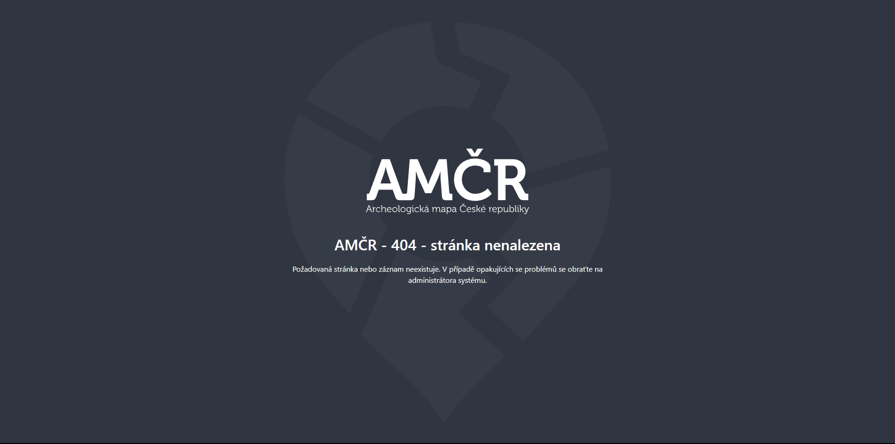

Zpravodaj AMČR č. 12
Vážení uživatelé AMČR,
přinášíme Vám zpravodaj AMČR č. 12, který je spjat zejména s nasazením nové verze AMČR, ve které implementujeme (nejen) přidělování persistentních identifikátorů DOI, IGSN a dalších, ale i řadu dílčích změn pro usnadnění Vaší práce. Dále zpravodaj obsahuje informace o chybových hláškách AMČR, se kterými se můžete setkat, ale i jiné novinky z Archeologického informačního systému České republiky (AIS CR).
Váš tým AIS CR…
AMČR nestojí na místě…
Od spuštění webové verze AMČR v srpnu 2024 (o kterém jsme detailněji psali právě v minulém zpravodaji) byla aplikace průběžně vylepšována, a to v rámci již 19 vydaných menších (minor) verzí (v1.0.0–v1.0.19). Velká část úprav souvisela s odstraňováním chyb a doplňováním méně významných funkcionalit na základě zkušeností z provozu. V pátek 21. 3. 2025 došlo k vydání podstatně rozsáhlejší verze v1.1.0, která obsahuje řadu zásadnějších novinek. Patří mezi ně jak déle plánované funkcionality, tak funkce poptávané Vámi, uživateli AMČR…
Výpisy
Do AMČR se vrátila důležitá funkce pro generování výpisů celého záznamu, které mohou posloužit jako přehled všech souvisejících dat, stejně jako k vytvoření tiskové sestavy. Výpis je možné zobrazit buď pro konkrétní záznam pomocí menu v jeho záhlaví, nebo pro konkrétní list tabulky pomocí položky Generovat výpis v menu pro export. Řazení záznamů ve výpisu vždy odpovídá řazení záznamů v tabulce. Výpis pak obsahuje aktivní hyperlinky odkazující na navázané záznamy.
Persistentní identifikátory
AMČR dosud užívala pouze interní systém identifikátorů, které sice lze považovat za trvalé, nicméně nenaplňují parametry persistentních identifikátorů (PID). Nově jsou všem dokumentům při jejich archivaci přidělovány identifikátory DOI (Digital Object Identifier), odvozené z interního identifikátoru. Obdobně je pak všem nálezům v AMČR-PAS a lokalitám v momentě archivace přidělen identifikátor IGSN (International Generic Sample Number), což je specifický identifikátor pro fyzické entity odvozený z DOI.
Více o FAIR datech v archeologii se můžete dozvědět v příručce ZÁSADY zajištení FAIRové správy a využitelnosti dat https://doi.org/10.5281/zenodo.3946099
Uživatel si pak ve správě svého účtu může provázat svůj účet s ORCID (Open Researcher and Contributor ID) pro jednoznačnou identifikaci. ORCID byly spolu s Wikidata ID doplněny též do hesláře osob. U organizací nově evidujeme jejich ROR (Research Organization Registry), pokud existuje. V brzké době bude možné vkládat též DOI k jednotlivým publikacím v externích zdrojích (aktuálně funguje pouze pro datasety registrované přes DataCite).
Všechny tyto identifikátory zajistí lepší citovatelnost dat v AMČR a jejich zařazení do mezinárodních indexů, zejména do DataCite Commons. Jedná se také o důležitý krok k FAIR archeologickým datům a naplnění mezinárodně uznávané dobré praxe. Při odkazování na záznamy a dokumentaci z AMČR proto používejte doporučené citace, dostupné v Digitálním archivu AMČR u každého záznamu (pod tlačítkem otevřené knihy).
Nová potvrzení o oznámení a zrušení projektu
AMČR již řadu let automaticky generuje a odesílá oznamovatelům potvzení o splnění jejich oznamovací povinnosti. Toto potvrzení dostalo novou, přehlednější podobu a jeho obsah byl doplněn o poučení o zákonných povinnostech a možnostech oznamovatele souvisejících s realizací archeologického výzkumu. Toto potvrzení je nově možné v důvodných případech pomocí volby v příslušných krocích správy projektu cíleně neodeslat (např. evidence neoznámených záměrů). Zcela nově pak bylo doplněno obdobné potvrzení odesílané při zrušení projektu, které je rovněž přiloženo k emailu pro oznamovatele. Jeho cílem je zvýšit právní jistotu a zlepšit komunikaci s oznamovateli záměrů.
Notifikace na projekty
Notifikace na projekty je nově možné získávat nejen pro nové záchranné výzkumy v daném kraji, okresu či katastru, ale také pro nové ohlášené badatelské výzkumy a průzkumy. Příslušné nastavení zůstává součástí detailu uživatelského účtu. Ve výchozím režimu budete nadále dostávat upozornění pouze na nové záchranné projekty.
Exporty
Možnost exportovat záznamy byla dosud v AMČR omezena maximálním počtem 50.000 záznamů. Nově je díky optimalizaci procesu možné tuto hranici cíleně překročit, avšak doporučujeme tuto funkci používat s rozvahou, z důvodu možné zátěže systému a celkově delší doby přípravy exportu.
Editace souřadnic PIAN
V mapě při editaci PIAN přibyl nový nástroj pro úpravu polohy lomového bodu editované geometrie zadáním konkrétních souřadnic. Lze tak zadávat velmi přesnou polohu a tvar PIAN i bez nutnosti data importovat, pokud to z nějakých důvodů není možné či účelné.
Nové metadatové schéma
Vzhledem ke změnám v datové struktuře byla provedena aktualizace metadatového schématu užívaného k ukládání metadat v repozitáři a jejich poskytování prostřednictvím protokolu OAI-PMH. Bližší informace jsou zveřejněny v dokumentaci API na adrese https://api.aiscr.cz/. Upozorňujeme též na možnost využít autentizační službu AMČR a endpoint pro stahování souborů, dokumentované na stejné adrese.
Trvalé uživatelské volby
Protože chceme zjednodušit ovládání aplikace a každý raději pracuje jinak, některé volby se automaticky ukládají do vašeho prohlížeče a není je tak třeba opakovaně nastavovat při každé aktualizaci či přihlášení. Jedná se o výchozí zobrazení sloupců v tabulkách, volbu zobrazených vrstev na mapách či zobrazení levého menu. Po odhlášení uživatele si také aplikace zapamatuje, kde jste skončili, a dokud nezavřete příslušné okno prohlížeče, můžete se snadno přihlásit zpět a pokračovat.
Další změny
- Optimalizace chování aplikace při nahrávání souborů – vše je nyní srozumitelnější a soubory lze po nahrání snadno odstranit, dokud proces nedokončíte.
- U každého záznamu přibyla ikona pro zkopírování odkazu na daný záznam v AMČR (jeho PID, tj. DOI nebo IGSN naopak vždy vede na stránku v Digitálním archivu).
- Pole s výběrovými seznamy jsou nyní vždy opticky odlišitelná od běžných textových polí a seznamy s možností výběru více položek obsahují možnosti
Vybrat všeaZrušit výběr. - Základní topografická mapa je nově dostupná též ve stupních šedi.
- Do AMČR-PAS lze nově souřadnice zadávat také ve formátu stupně, minuty a vteřiny. Stačí přepnout příslušnou volbu v menu se souřadnicovými systémy.
- Optimalizace rychlosti načítání dat, celkové odezvy aplikace, opravy chyb a drobná vylepšení.
Přehled změn v předchozích verzích
Mezi podstatnější změny v předchozích verzích dostupných již od podzimu patří:
- Změna primárního souřadnicového systému na S-JTSK (EPSG:5514). U mapy tak nově najdete souřadnice v S-JTSK i WGS-84. Z důvodu kompatibility byla odstraněna podkladová vrstva OpenStreetMap ze všech map kromě Knihovny 3D.
- Rozšířené vyhledávání v mapě (lupa v levém horním rohu), které umožňuje hledání podle řady parametrů, vč. parcelních čísel či adres.
- Možnost v AMČR-PAS použít existující libovolný záznam jako šablonu pro zápis nového záznamu, a to pomocí volby
Zapsat podobný záznamv menu v detailu záznamu. - Změně maximální velikosti vkládaného souboru – nově můžete vkládat soubory o maximální velikosti až 250 MB.
- Možnost pomocí volby v menu v detailu projektu jednoduše zaslat žádost o odhlášení již přihlášeného projektu (projekty tak není nutné navrhovat ke zrušení a vracet zpět ve dvou krocích) a o poskytnutí kontaktních údajů oznamovatele, pokud jimi disponujeme.
- Možnost v odůvodněných případech nevyplnit (proškrtnout) kontaktní údaje oznamovatele (email, telefon) při zápisu projektu archeologem.
- Možnost zpětného doplnění přesného data oznámení, pokud je projekt zapisován zpětně (na základě oznámení mimo AMČR).
Digitální archiv AMČR
Vývoj se nezastavuje ani v případě Digitálního archivu. Nová verze byla spuštěna na konci ledna 2025 a její další aktualizace proběhla i s nasazením nynější verze AMČR. Přehled změn a vylepšení naleznete v Changelogu.
Upozorňujeme zejména na komplexní optimalizaci mapy a jejího chování či opravu exportu prostorových dat. V aplikaci nově naleznete také přehled uživatelských statistik využití dat v Digitálním archivu, a to buď pro jednotlivé záznamy (proklik tlačítkem u každého záznamu) nebo jako celkovou statistiku (v menu v záhlaví).
V Digitálním archivu i v AMČR mají nově ke všem archivovaným dokumentům přístup pracovníci Národního památkového ústavu z pozice výkonu své funkce v péči o archeologické kulturní dědictví. Pravidla pro nakládání s informacemi v dokumentech z pozice pracovníků NPÚ jako standardních uživatelů AMČR však zůstávají stejná. Nadstandardní přístup je možné užívat pouze v souvislosti se zákonnou agendou.
Typy chybových hlášení v AMČR a co s nimi dělat
Při práci s AMČR jste se již jistě setkali se situací, kdy na Vás vyskočí obrazovka s velkým logem AMČR a chybovou zprávou a kódem. Pro lepší pochopení zde přinášíme přehled, co která chyba přibližně znamená a jak se v daném případě doporučujeme zachovat. U chyb, u kterých je to explicitně uvedeno, nás o nich prosím informujte prostřednictvím emailu amcr@arup.cas.cz.
AMČR - 403 - přístup zakázán
Tato hláška se vám zobrazí ve chvíli, kdy do dané části AMČR či ke konkrétnímu záznamu nemáte oprávnění přistupovat, případně nemáte práva provést některou operaci. Setkáte se s tím ve chvíli, kdy vám třeba někdo pošle odkaz, u kterého platí některá omezení. Pokud máte pocit, že byste se k záznamu dostat měli a aplikace se nechová správně, napište nám.
AMČR - 404 - stránka nenalezena
Informace o tom, že poptávaná stránka neexistuje. Může nastat při zadání chybné URL adresy, nebo například po smazání záznamu, případně změně původního dočasného označení záznamu (s “X-” na začátku) na trvalé označení a využití starého odkazu. Většinou nejde o chybu, avšak v případě nejasností nás neváhejte požádat o vysvětlení.

AMČR - 500 - interní chyba serveru
Tuto stránku byste nikdy neměli vidět. Došlo totiž k neočekávané chybě, se kterou si aplikace neuměla správně poradit.
Když dojde k této chybě, prosíme, abyste do emailu zkopírovali URL adresu z řádku v prohlížeči, zkusili stručně popsat, co jste těsně před zobrazením chyby dělali a v kolik hodin přesně k chybě došlo. Email pak odešlete na adresu amcr@arup.cas.cz. Vaše informace nám pomohou chybu nejen najít, ale také ji co nejrychleji odstranit, abyste podobné obrazovky vídali co nejméně.
504 Gateway Timeout
Tato stránka nebude mít standardní podobu s logem, ale zobrazí se ve výchozím formátu prohlížeče. Chyba je způsobena příliš dlouhou odezvou serveru a následným automatickým ukončením úlohy.
Pokud se Vám chyba objevuje opakovaně, postupujte jako při chybě 500, tj. kontaktujte nás na emailu amcr@arup.cas.cz, popište okolnosti vzniku chyby a nezapomeňte přiložit URL odkazem.
Chyba repozitáře - Akci se nepodařilo provést
Chybová hláška, která souvisí s možnou kolizí operací prováděných nad záznamy v repozitáři. Může souviset např. s tím, že stejný záznam nebo dva na sobě závislé záznamy upravuje někdo souběžně s vámi. Taková operace se automaticky zastaví a je třeba se o úpravu pokusit za chvíli.
Pokud operace opětovně selže, postupujte jako u chyby 500, tj. kontaktujte nás na emailu amcr@arup.cas.cz, popište okolnosti vzniku chyby a nezapomeňte přiložit URL odkaz.
Pevně věříme, že na chyby budete narážet zcela výjimečně. I přes snahu každou verzi pečlivě otestovat však může k problému dojít. Zejména po nasazení nových verzí AMČR prosíme o co nejrychlejší hlášení případných chyb, na které narazíte. Provoz sice vždy sledujeme, avšak oznámení uživatelů mohou opravy vždy zásadně urychlit a pomohou nám lépe pochopit, co se děje. Stále též platí, že pokud se vám aplikace chová nestandardně či neočekávaně, budeme rádi za zpětnou vazbu a popis zvláštního chování, i když třeba AMČR přímo nehlásí chybu. Děkujeme za součinnost a Váš příspěvek k hladkému fungování systému!
Užití dat ve výstupech a citace AIS CR
Jsme rádi že naše nástroje a systémy využíváte. Při využívání dat a nástrojů AIS CR Vás prosíme o:
- uvedení odkazu na nástroj či data obvyklým způsobem ve Vašich výstupech (ideálně s využitím citace doporučované v Digitálním archivu a užíváním nově dostupných PID);
- navázání Vašich výstupů na AIS CR při zápisu do Rejstříku informací o výsledcích (RIV; pole Velké výzkumné infrastruktury) – jedná se o povinnost každého zadavatele RIV vyplývající ze zákona;
- případnou evidenci výstupů pomocí stručného dotazníku, dostupného z https://www.aiscr.cz/vystupy, abychom lépe porozumněli, na co naše data používáte.
Více k citacím dat z AMČR se dozvíte v samostatném tutoriálu zde.
Pokyny pro badatelské výzkumy
Nedávno jsme Vás informovali o novinkách a dílčích změnách ve vztahu k badatelským archeologickým výzkumům a průzkumům, zde je ještě jednou připomínáme. Jelikož došlo v této oblasti v posledních letech k několika změnám v administraci a evidenci (např. z důvodu spuštění AMČR-PAS), připravily Archeologické ústavy a AIS CR přehledné informace k správnému administrativnímu postupu při realizaci těchto projektů.
Tyto informace již nyní naleznete na stránkách obou ústavů:
Pokyny jsou platné od svého zveřejnění a prosíme o dodržování uvedeného postupu při žádostech o nové badatelské výzkumy. Součástí pokynů je také aktualizovaný formulář pro žádost o vyjádření Archeologického ústavu a odkaz na již dříve zveřejněný vzor projektu průzkumu.
Základní proces zůstává stejný, mění se pouze některé jeho detaily:
- U žádostí o vyjádření budou Archeologické ústavy požadovat uvedení ID projektu v AMČR, který musí být vytvořen a přihlášen před podáním žádosti.
- Do projektu v AMČR bude oprávněnou archeologickou organizací vždy nahrána projektová dokumentace a předávána Archeologickému ústavu výhradně touto formou.
- Vyplněný formulář žádosti budou Archeologické ústavy přijímat pouze prostřednictvím datové schránky.
- Archeologické ústavy své vyjádření standardně odešlou oprávněné organizaci, následně jej ale také nahrají do příslušného projektu AMČR, a to do 30 dnů od obdržení žádosti.
- Projektová dokumentace bude evidována také po uzavření projektu, a to z důvodu zachování informací a transparentnosti při provádění archeologických výzkumů. Projektová dokumentace ale zásadně nebude volně přístupná (zejm. z důvodu ochrany osobních údajů, probíhajícího výzkumu apod.)
Pro projekty typu průzkum připomínáme, že tyto jsou realizovány zásadně mimo památkově chráněná území. V případě, že chce oprávněná organizace realizovat tento druh činnosti na chráněném území, musí splnit všechny náležitosti schvalování standardního badatelského archeologického výzkumu.
Zápis starších akcí
Pro vkládání akcí starších 5 let doporučujeme jejich zápis přes modul Samostatné akce. Byť se může jednat o akce projektového charakteru, je vytváření projektů, které představují administrativní část záznamu, pro tyto akce nadbytečné. Při zpětném zápisu akcí mladších 5 let pak zvažte, zda je relevantní vyplňovat skutečné kontaktní údaje na oznamovatele, zejména jeho e-mail. Po zápisu systém automaticky rozesílá potvrzení o zapsání projektu a zpětně mohou takové e-maily u oznamovatele vyvolat zmatek. V případech, kdy již není žádoucí, aby oznamovatel takový e-mail z AMČR dostal, doporučujeme pole proškrtnout (-).
Novela zákona č. 20/1987 Sb., o státní památkové péči
Od 1. ledna 2025 vstoupila v platnost novela památkového zákona. Jednou z věcí, které tato novela upravuje je změna způsobu odnímání povolení oprávněných organizací ze strany Ministerstva kultury České republiky. Od ledna 2025 může MK ČR povolení odejmout i bez dohody s Akademií věd ČR, a to kupř. v případě závažného porušování povinností stanovených zákonem, nebo na základě zákona. V této souvislosti upozorňujeme, že MK ČR může kontroly v AMČR provádět samostatně prostřednictvím vlastního přístupu do AMČR.
Další změnou, na kterou v souvislosti s novelizací zákona upozorňujeme, je změna pravidel pro nakládání s krajským majetkem:
- Organizace, kterých nálezy nejsou majetkem obce nebo státu, mají povinnost oznámit kraji zahájení archeologického výzkumu v jeho obvodu.
- Po výzkumu organizace nálezy zpracuje a spolu s dokumentací je předá kraji.
- Náležitosti oznamování a zpracování může kraj upravit nařízením.
Veřejná správa a archeologie v digitální době
V rámci akce Týden pro digitální Česko 2024 jsme uspořádali webinář, kde se kolegové Róbert Antal a Ondřej Švejcar věnovali tématu ochrany archeologického dědictví a výše zmíněným změnám v zákoně o státní památkové péči, které přišly v platnost v lednu 2025. Záznam webináře naleznete na našem YouTube kanále.